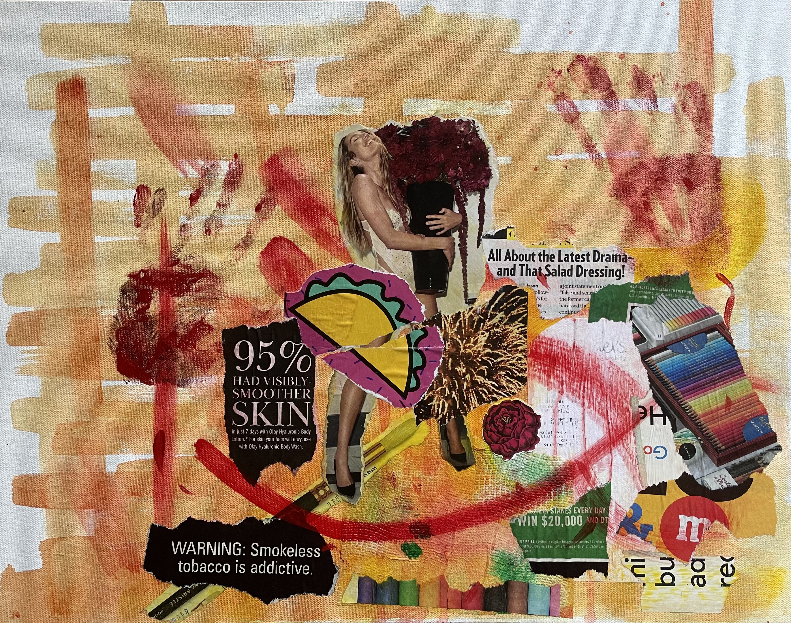
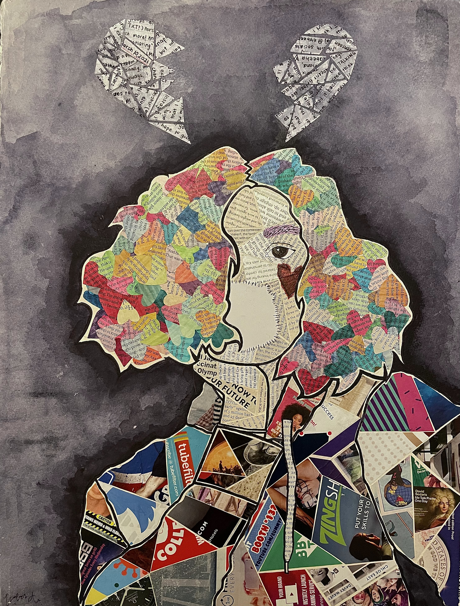

Creative Coding
Stamp Program
For this program, my goal was to create a stamp tool that I could use to make pieces that expressed my art style.
The functions I added include: e: Rotate (30 degrees), f: Reflect, and t: Tint (Pink).
I drew the stamps in Procreate, which ended up being useful when layering because I was able to control where the stamps has negative space and varying opacity that can be filled with the stamps behind them.
This was my first venture into applying my physical art style in coding art .
Click here to see the code.
Click the thumbnail below to try the program.

P5.JS, 2024
Saving Cats
Saving Cats is a piece that utilizes classes and arrays as well as parent/child functions.
Being a partially collaborative project, I used a classmate's code for the cats and my own for the Supermen.
Click the thumbnail below to try it.

P5.JS, 2024
Video Art
Worst Fear
Worst Fear is an attempt to capture the loneliness and fears of abandonment that came with staying in my hometown while my friends left.
Uses music from Conan Gray's 'The Exit'.
Due to copyright issues, this video cannot be embedded. Click the thumbnail below to watch.
Video Art, 2023
Adobe Premiere Pro
The Park
The Park is an audio-centered piece that focuses on revisiting the past — and feeling like nothing and everything has changed at the same time.
Video Art, 2023
Adobe Premiere Pro, Adobe Audition
Digital Art
A Distorted Puzzle
My goal for A Distorted Puzzle was to capture the child-like charm and wonder of old memories while working with subjects from both my past and my present. The newer memories appear melancholic and use dull colors while the older ones are more vibrant because I associate them with happiness. I used doodles that I made with a crayon in 2018 and new doodles from 2023 that were drawn with a pen and alcohol markers.

Digital Collage, 2023
Adobe Photoshop
Dusk or Dawn?
Dusk or Dawn? focuses on the feeling of watching time pass when watching the sunrise and sunset every day. While it's beautiful, it can almost be scary to watch days fly by so fast.

Glitch Art, 2022
Adobe Photoshop
Through the Years
When creating Through the Years, I used an photo I took of my father at the Palace of Fine Arts because I had seen photos of him and my mother there from the nineties, shortly after they got married. The piece is meant to present this passage of time as a glitch, as if no time has passed at all.

Glitch Art, 2022
Adobe Photoshop
Photography
Mini-Me
Mini-Me is an image of

Photography, 2024
Adobe Lightroom Classic
Femme Fatale
[Insert Description]

Photography, 2024
Adobe Lightroom Classic
Mixed Media
All About the Latest Drama
All About the Latest Drama is commentary on distractions in today's age, particularly distractions from global atrocities and climate change. When large corporations are exploiting cheap labor and Earth's limited resources while presenting us with a shiny new product, whose hands are covered in blood?
Mixed Media, 16 x 20 in, 2023
acrylic paint, magazine scraps, canvas board
Excuses
Excuses focuses on the role speech has in our relationships — how we waste it, how we hold it back, and how it's hard to find the right things to say at the right times. Sometimes, what's most hurtful is what isn't said.
Mixed Media, 16 x 20 in, 2022
acrylic paint, gel pen, alcohol marker, magazine scraps, watercolor paper